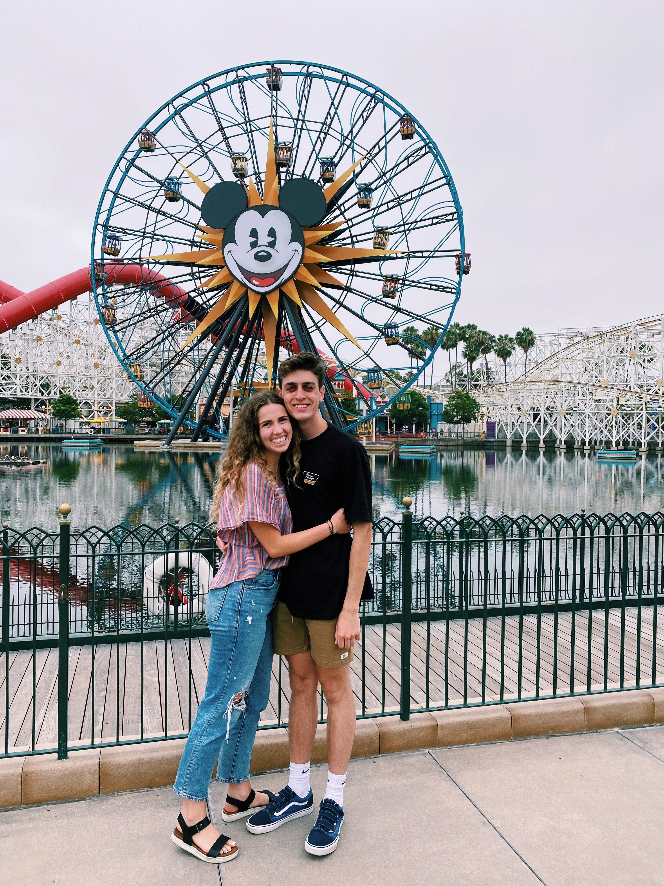
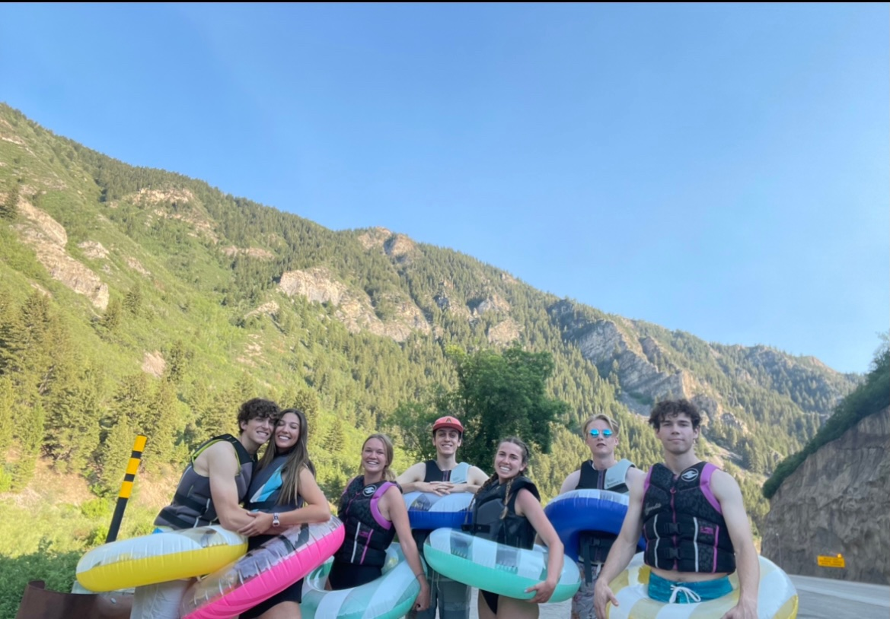

Hi, I am Anika, a senior at Brigham Young University from Orange County, CA. I love reading, cooking, going on walks, and making memories with the people I love. Above all, I am passionate about multiplying life's happy moments and creating meaning for the people around me. This passion has led me to study Experience Design and Management. I aspire to use this degree as a catalyst to spend my life elevating every day as well as once-in-a-lifetime experiences for others.


